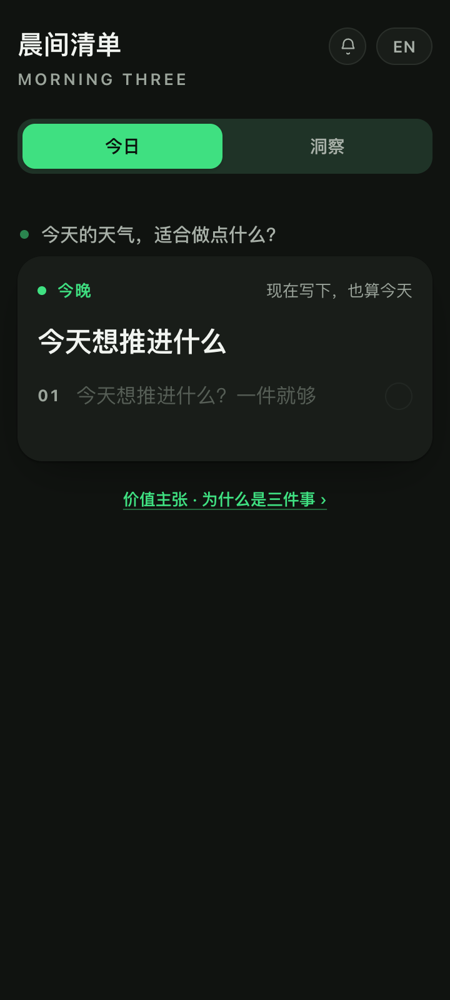
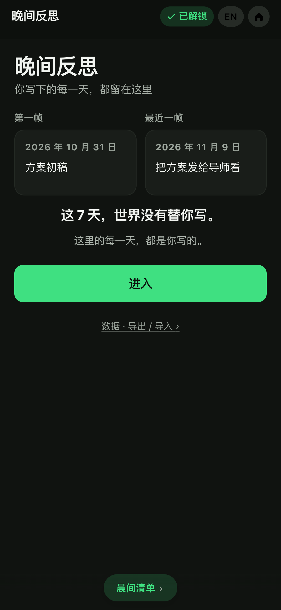
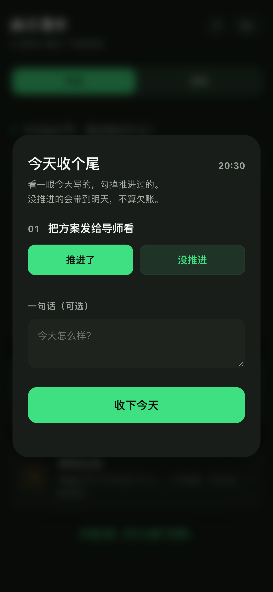
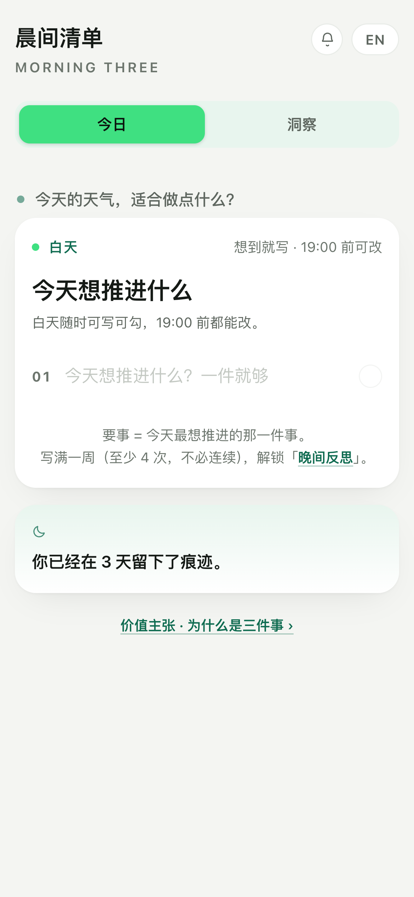

对 v32 做一次真跑 + 真审：浏览器自动化实测功能链路，专家视角走查体验与价值。目标不是证明产品好，是把短板和错误挖出来。
v33 已修复并上线：8 个缺陷中的 P0 / P1 / P2 共 10 项全部闭环。
同日复跑 85 条断言 / 0 未通过，文案护栏 31 条 / 0 未通过，三个画像 pageerror 全为空。下方保留 v32 的原始结论与缺陷清单作为基线证据；第 08 节是修复与复测结论。
结论：功能主干稳，但有三个必须先修的硬伤——首次解锁白屏、夜间冷启动被收尾浮层锁死、导出备份不含晨间清单历史。
19 条未通过断言全部可归因到 8 个缺陷，没有随机失败。其中 3 个是发布前必改；其余多为一致性、可访问性与文案问题。产品定位不需要为 13 岁与 55 岁两个画像改动——他们不是 MRD 定义的目标用户，测试价值在于暴露通用缺陷，而不是让产品去适配所有人。
先说清楚哪些是实测、哪些是判断，避免把推演包装成用户反馈。
三个独立浏览器上下文，各自独立 localStorage；固定系统时间为 2026-11-09，分别模拟上午首访与 20:30 晚访。真实点击、真实输入、真实读取 DOM 与 computed style，覆盖首屏 → 输入 → 勾选 → 洞察 → 归档 → 价值弹窗 → 中英切换 → 19:00 后只读 → 收尾浮层 → 晚间反思门禁 → 数据导出。共 70 条断言、12 张全页截图。
六维评分、画像适配、美感与长期价值判断，是我的专业评估，不是用户打分。没有招募真人，报告里不出现「用户满意度」「NPS」这类编造指标。凡涉及画像心理与场景适配的结论，均标注为「走查」。
差异体现在设备、首次访问时间、历史数据密度与输入内容；其余条件完全一致。
最贴近 MRD 目标用户
低频、非目标导向的日常
放学后才有空 · 非目标用户
分数为专家走查判断〔走查〕；括注中的断言 ID 为实测支撑〔实测〕。5 = 优秀，1 = 不可用。
| 维度 | A · 24 岁 | B · 55 岁 | C · 13 岁 | 关键依据 |
|---|---|---|---|---|
| 功能 | 4 | 3 | 1 | 输入即存、顺延、归档、洞察、中英切换全通过；C 晚访被强制收尾，核心功能完全不可达（F-03/04/06–09） |
| 可用性 | 4 | 2 | 1 | 最小 11px、8 处 <13px 淡字（F-05）；收尾弹层只有「推进了」一个大按钮，无显式「没推进」（E-03） |
| 体验与互动 | 3 | 2 | 1 | 输入瞬间无反馈，650ms 后才弹「已保存」（F-08）；三画像同一天收到完全相同的一句策展提示，无个性化 |
| 界面与美感 | 5 | 3 | 4 | 极简、冷调、无 emoji、卡片层次干净，首页去重后只剩一句提示 + 一句回顾（F-02）；扣分项全在小字对比度与暗夜下的可读性 |
| 开始使用价值 | 3 | 2 | 1 | 白天首访路径顺畅；晚访首屏直接是「今天空白，收个尾」，连写一句的机会都没有（C-01 截图） |
| 长期价值 | 2 | 2 | 1 | 导出备份不含晨间清单历史（G-04）、前 7 天无数据入口（G-05）、首次解锁白屏（G-06）；「日复一日录入」的信任底座没兜住 |
70 条断言，51 通过 / 19 未通过。19 条全部指向下表 8 个具体缺陷，无随机失败。
| 画像 | 通过 | 未通过 | 未通过集中在 |
|---|---|---|---|
| A · 24 岁 | 19 | 4 | 首次解锁白屏、首页解锁状态不同步、导出缺主数据、数据入口不可达 |
| B · 55 岁 | 19 | 5 | 空白日被算作输入、导出缺主数据、数据入口不可达、收尾弹层语义 |
| C · 13 岁 | 13 | 10 | 夜间首访 6 条链路全部阻断 + 收尾浮层 + 导出缺主数据 |
每条带证据来源。〔实测〕= 断言 ID / 截图，〔代码〕= 文件行号，〔走查〕= 专家判断。
〔实测〕G-06 · A-04-gate.png 〔代码〕success.html:796–798, 821–830
解锁那一刻调用 viewWhisper(u)，它遍历 DB.days（晚间记录）取首末两帧。但刚解锁的用户必然还没有任何晚间记录，ks=[] → frame(undefined) → 读 r.items 抛 TypeError: Cannot read properties of undefined (reading 'items')，渲染中断，只剩页头页脚。A 画像截图整片空白。
影响：用户按规则坚持 7 天、终于等到解锁，第一次打开看到空页面。这是全用户必现，不是边缘情况。
〔实测〕F-03/04/06/07/08/09、E-04 · C-01-first.png 〔代码〕index.html:1485–1491, 1162–1166
mustCheck() 只判断 phaseOf(todayKey())==='late'，不看用户是否用过。20:30 首次打开：全屏遮罩 + 唯一按钮「今天空白，收个尾」；背景模糊不可读；当日清单只读、无输入框、无勾选；因为当天没有任务，连「一句话（可选）」输入框都不渲染。测得的 6 条输入链路断言全部阻断。
影响：放学后 / 加班后 / 睡前才遇到产品的人，第一天完全用不了。这不是「体验不好」，是冷启动直接失败。与「今天空白也算数」的初衷正面冲突。
〔实测〕G-04（三画像全失败） 〔代码〕success.html:1364–1369, 520–523
exportJSON() 只打包 {days:DB.days, unlock}，即晚间反思自己的记录，完全不含 morning-three.v1 里的晨间三件事。A 画像有 8 天晨间数据，导出文件仅 98 字节、0 天、不含「方案初稿」。而数据页文案写着「换设备或清缓存会丢，建议定期导出」。
影响：用户以为备份了全部，实际最重要的记录一条没存。这是信任级缺陷——之前定过的原则「日复一日录入却无法保存会毁掉信任」，正好被这里击穿。
〔实测〕G-02、B-04-gate.png 〔代码〕success.html:414–425, 393–397；index.html:905–918
判据写的是 days[k].tasks || days[k].checkin，而 tasks:[] 空数组是 truthy。用户打开页面、写了又删光、或点过勾选都会留下空记录，全被计为「那天输入过」。B 画像窗口内真实输入 3 天，页面显示 5 / 4，还同时写着「还差 1 天满 7 天」，自相矛盾。同一产品里 whisperCard() 用 taskList(r).length 严格过滤，两处判据不一致。
影响：解锁条件可被空白操作灌水，提前开门；门禁数字误导用户。
〔实测〕G-03 〔代码〕index.html:903, 1099–1116；success.html:437–474
首页 sdOpen() 读的是 success-diary.v1 的 unlock.at，而该标记只有进入 success.html 才会写入。A 已满足全部条件（门禁判定 open），首页却仍显示「过去 7 天输入了 5/4 次，不连续也算」——分子大于分母，看起来像还没达标。用户必须多点一次才开门。
〔实测〕G-05（三画像全失败） 〔代码〕success.html:1048, 1088, 802
「数据 · 导出 / 导入」按钮只存在于成就墙视图（viewWall），而成就墙要解锁后才看得到；门禁页没有该入口。实测三个画像在当前视图均无法到达。最需要备份的正是前 7 天的新用户。
〔实测〕E-03（三画像全失败）、E-04（C 失败） · A-03-evening.png 〔代码〕index.html:1500–1513；字典 ov_undone 定义未使用
每条任务只有一个大绿按钮「推进了」，「没推进会带到明天」全靠上方小字说明暗示；误点后无法撤销。字典里明明有 ov_undone:'没推进' 却没渲染。空白日收尾连一句话输入框都没有。对不熟悉产品语义的人，这是明显的认知负荷。
〔实测〕F-05 · B-01-first.png 〔代码〕index.html:110–186
全页最小字号 11px，A/B 首屏各有 8 处文字小于 13px：副标题、倒计时、页脚提示、标签、品牌副名。输入框 16px 达标（iOS 不会自动缩放），但周围全是淡灰 12px。暗夜主题下对比度进一步下降。55 岁画像这里是硬伤。
〔实测〕B-01-first.png 〔代码〕index.html:499, 493；value.html:76
v30 定过「不提没白过 / 不追问压力」，但首页 lock_hint 仍是「要事 = 今天结束时会让你觉得没白过的那件事」；smoke-echo-tone.js 只检查策展问句库，护栏覆盖不到字典其它字段。同时「距 18:00 收尾还有 8 小时 20 分」是持续倒计时，与「不打扰 / 空白也算数」的哲学相冲。
〔代码〕index.html:567, 499；value.html:76；success.html:536–537
价值卡写「你不书写，世界就会覆盖你的痕记」，首次 briefing 写「你不书写，世界就会替你书写」——同一句核心主张两种说法。首页写「输入一周后解锁晚间反思」，真实规则是「满 7 天 + 过去 7 天输入 ≥4 次（可不连续）+ 顺延 3 天必开」，预期落差明显。
〔实测〕F-08 / 三画像 echo 一致 〔走查〕
全部为真实浏览器运行截图，非设计稿。路径相对本报告所在目录。




完整分级、改法与验收标准见同目录 改进计划.md。这里只给顺序。
hasInput(r) 判据 → 首页解锁状态由真值计算而非等另一页写标记 → 门禁页无条件给数据入口 → 修「5/4」显示。2026-11-09 同日完成：三个 P0、三个 P1、四个 P2 全部修复；P3 按原计划不进产品。以下均为真实复跑结果，不是推演。
断言从 70 条扩到 85 条（新增 15 条：备份回环、数据入口可达、字号下限、冷启动文案、解锁规则一致），原 19 条 FAIL 全部转 PASS。
没有靠删断言或放宽判定刷绿：F-05 从「发现小字算通过」改成「无小字才算通过」；G-04 从自己拼一份假 payload 改成真实调用 backupPayload()；G-03 增加了「必须显示『已经为你敞开』」的反向校验。
这三条原本就是测试脚本自身的缺陷，一并修正。
| 缺陷 | 根因与修法 | 验收 |
|---|---|---|
| P0-1 | 解锁低语页读错了库：拿空的晚间记录去取首末帧。改为读晨间清单 mLoad()，并对 frame(k) 做兜底；无痕迹时直接进今日页。顺带让「这 7 天，世界没有替你写」第一次有了真实内容。 | G-06 三画像零异常；A-04 截图首帧 10/31「方案初稿」、末帧 11/9「把方案发给导师看」 |
| P0-2 | 19:00 后只要今日空白就只读 + 弹收尾浮层，形成死路。引入会话级 COLD_SESSION（18:00 后 + 今日空白 + 未收尾）：此状态下仍给可写输入框，本次会话不弹收尾；刷新后若今日已有内容，老用户流程原样保留。 | C 画像 F-03/04/06/07/08/09 全通过；A/B 晚间 E-01 仍通过 |
| P0-3 | 导出只带晚间记录。抽 backupPayload() 统一备份包（morning + evening + 版本/时间），导入同时兼容新包与旧格式；文件名改 morning-three-backup-*.json。 | G-04 真实调用导出函数；G-08 清空后再导入，晨间历史条数完整回来 |
| P1-1 | 两页各写一套判据，空数组被当成输入。统一 hasInput(r)（真实文字 / 归档 / 补记），六个调用点全部对齐。 | B 画像 G-02 通过，inflatedDays 为空；门禁不再出现「5 / 4」 |
| P1-2 | 首页解锁状态依赖 success.html 写过标记。改为按同一套规则算真值：满 7 天且（4 次或顺延到期）即视为已开，文案「已经为你敞开」。 | A 画像 G-03 通过（门禁判定 open 时首页不再说「还差」） |
| P1-3 | 数据入口藏在解锁后的成就墙。view() 改为单出口并常驻一个数据入口，任何状态（含 18:00 前、未解锁）可达；洞察页底部也加了直达链接 success.html?view=data。 | G-05 三画像通过；G-07 洞察页入口可达；全新用户数据页零报错 |
| P2-1 | 收尾弹层每条任务补回「推进了 / 没推进」二选一（原本 CSS 就留了两列），「一句话（可选）」改为空白日也常驻，误点可再点取消。 | E-03 / E-04 三画像通过 |
| P2-2 | 全站可见文字下限提到 13px（index 43 处 / success 16 处），浅色与暗夜 --ink3 对比度同步提高。 | F-05 三画像 minFontPx ≥ 13、under13Count = 0；55 岁画像截图复核 |
| P2-3 / P2-4 | 删掉「距 18:00 收尾还有 X」倒计时及死函数；「没白过」换成正向表达；briefing 核心句与 value.html 统一为「你不书写，世界就会覆盖你的痕记」；解锁说明写明「至少 4 次、不必连续」。调性护栏从策展库扩到全站字典与数据契约。 | F-10 / F-11 通过；smoke-echo-tone.js 31 条全通过 |
断言只能证明「没坏」，证明不了「不啰嗦」。以下 4 处是逐张看图后补修的，均已加进护栏或断言。
剩余风险：全程无真人参与、无 30 天真实留存数据；「没黏性、两天弃用」这条原始用户反馈，本版只修了反馈时序的结构性阻塞（白屏、锁死、备份失信、状态漂移），并没有证明留存会改善。下一次改动前请先备份 v33 稳定版；任何 P3 改动须先跑 10 人 × 14 天小样本，看第 3 天回访率，不提升就砍掉。
testing/audit-run.js（85 条断言）· testing/raw-log.json（原始日志）· testing/shots/（13 张截图）· smoke-echo-tone.js（31 条护栏）· testing/改进计划.md